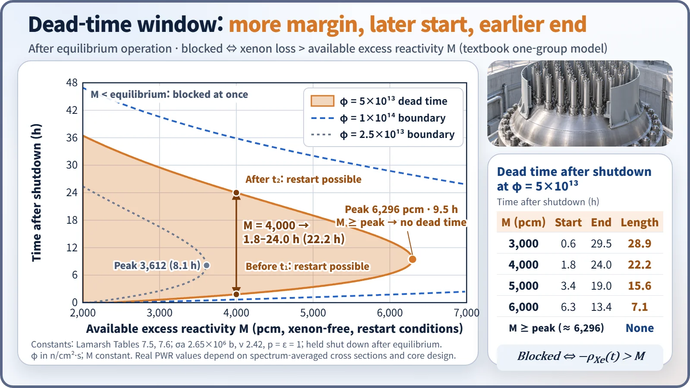
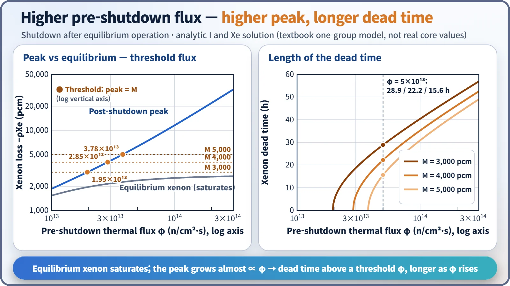
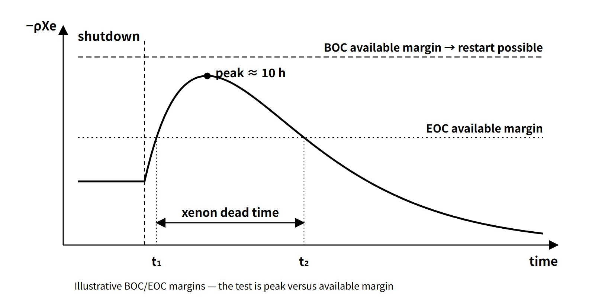

Reactor Physics & Kinetics · C-RX-022
Xenon Dead Time — The Window After Shutdown When Xenon Exceeds the Available Excess Reactivity
Restart is blocked while the xenon reactivity loss L(t) exceeds the available margin M; the window is the interval between the two roots of L(t) = M.
The xenon dead time is the period after reactor shutdown during which 135Xe builds up until its reactivity loss exceeds the available excess reactivity for restart (all rods withdrawn, boron diluted to the minimum), so that criticality cannot be reached within the assumed operating conditions. It is also called the xenon-precluded startup period.
This entry covers only the point where the two concepts meet: from when to when is restart blocked, and what sets its length?
Principle and mechanism
Why it happens: three conditions
- The burnout path disappears: during operation xenon is removed mainly by neutron absorption (σaφX). At shutdown φ = 0, and this path vanishes.
- 135I decays faster: 135I (T½ 6.7 h) decays faster than 135Xe (T½ 9.2 h), so for a while after shutdown production (λII) exceeds decay (λXeX). Xenon therefore peaks at around 10 hours.
- The available margin is finite: the reactivity available for restart, M, decreases with burnup.
The test is simple. With the xenon reactivity loss L(t) = −ρXe(t), the interval where L(t) > M is the dead time, and its start t₁ and end t₂ are the two roots of L(t) = M. M is the xenon-free excess reactivity at restart conditions (hot zero power) with all rods out and boron at its minimum, with burnup and other poisons held fixed. The power-defect recovery is already contained in this M, so it is not added separately.
After shutdown, xenon follows the analytic solution
X(t) = X₀e−λXe·t + λII₀/(λI − λXe)·(e−λXe·t − e−λI·t)
where I₀ and X₀ are the equilibrium values before shutdown.
The window opens and closes with the available margin
Using a textbook one-group model (Lamarsh constants), a shutdown from equilibrium operation at φ = 5×10¹³ n/cm²·s was calculated. The equilibrium loss is 2,365 pcm, and the post-shutdown peak is 6,296 pcm at 9.5 hours.
| Available margin M | Start t₁ | End t₂ | Length |
|---|---|---|---|
| 3,000 pcm | 0.6 h | 29.5 h | 28.9 h |
| 4,000 pcm | 1.8 h | 24.0 h | 22.2 h |
| 5,000 pcm | 3.4 h | 19.0 h | 15.6 h |
| 6,000 pcm | 6.3 h | 13.4 h | 7.1 h |
| ≥ peak 6,296 pcm | — | — | None |

Three things can be read from it.
- The larger M, the later the window starts and the earlier it ends. When M reaches the peak, the window disappears.
- If M is at or below the equilibrium loss, restart is blocked from the moment of shutdown. In a core that was able to operate normally, M is usually larger than the equilibrium value because of the power-defect recovery.
- Restart is possible before t₁. That is why, if the cause of a trip is cleared quickly, a prompt restart avoids the xenon peak.
The higher the flux before shutdown, the longer it lasts
Equilibrium xenon saturates once φ exceeds φX (≈ 7.9×10¹²), but the post-shutdown peak is proportional to the 135I inventory at the moment of shutdown, so it grows almost in proportion to φ. The peak-to-equilibrium ratio is 1.22 at φ = 1×10¹³, 2.66 at 5×10¹³ and 4.55 at 1×10¹⁴. Below the threshold flux at which the peak equals M (M 3,000 → 1.95×10¹³, 4,000 → 2.85×10¹³, 5,000 → 3.78×10¹³) there is no dead time; above it, the higher φ, the longer the dead time.

What governs these results is σaφ/λXe = φ/φX. In a real hot PWR the spectrum-averaged effective absorption cross section is smaller than the 2,200 m/s value, so comparisons between reactor types must be made on the same σaφ/λXe basis.
For a planned shutdown, reducing power beforehand also helps. Shutting down after reaching equilibrium at 50 % power (φ = 2.5×10¹³) gives a peak of 3,612 pcm, about 57 % of the 6,296 pcm when shutting down from 100 %. Right after a power reduction, however, xenon temporarily increases, so the benefit only appears after some tens of hours.
What it means in a plant
PWR: usually margin at BOC, a constraint at EOC
- Beginning of cycle (BOC): the hot full-power critical boron concentration is high (about 1,000–1,500 ppm in a reload core, as an example), so the reactivity obtainable by dilution is generally larger than the increase to the xenon peak. Restart is therefore usually possible even after a shutdown.
- End of cycle (EOC): the full-power critical boron falls to a few tens of ppm or less, leaving almost no dilution capacity. The available margin at restart conditions is roughly "equilibrium xenon + power-defect recovery (about 2,100 pcm at EOL, as an educational example) + remaining boron". If the increase to the xenon peak exceeds this, a dead time appears, and it grows longer toward the end of the cycle.
- Inefficiency of dilution at low boron: feed-and-bleed dilution proceeds as C(t) = C₀e−Qt/V, so the lower the concentration, the slower the ppm reduction. For this reason a deborating ion exchanger may be used at end of cycle.
CANDU: a window of tens of minutes
The Wolsong heavy-water reactors (CANDU) in South Korea keep excess reactivity small through on-power refuelling. The time during which xenon can be overridden by withdrawing the adjuster rods is reported to be about 30–40 minutes after shutdown. If this is missed, the reactor is poisoned out and must wait more than a day for the xenon to decay.
Operating responses
- Prompt restart: if the cause is cleared at once, reach criticality before t₁.
- Planned shutdown after power reduction: lower the pre-shutdown power to reduce the peak.
- Wait for decay: restart after t₂, recalculating the estimated critical position (ECP) with the xenon for the elapsed time.
- Monitoring after restart: if xenon is still decreasing, positive reactivity keeps coming in. Raising power increases xenon burnout, requiring boration or rod insertion, and an asymmetric axial xenon distribution calls for monitoring of xenon oscillations.
The xenon dead time is not a safety problem but an operational availability (capacity factor) problem. While xenon is high, the core is more deeply subcritical. Conversely, restarting while xenon is decaying adds reactivity continuously, so shutdown margin and insertion limits must be managed carefully.
Regulatory basis
| Basis | Key point |
|---|---|
| 10 CFR 50 App. A GDC 26 | Two independent reactivity control systems of different design principles, one able to control the rate of reactivity change from planned normal power changes (including xenon burnout) |
| Korean technical standard rule for reactor facilities, Article 28 (reactivity control system) | Reactivity control requirements (counterpart of GDC 26) |
| Same rule, Article 61 (core management and fuel handling) | Core management during operation |
| NUREG-0800 SRP 4.3 | Reactivity control capability, evaluation of xenon effects |
| NUREG-1431 STS LCO 3.1.1, 3.1.6 | Shutdown margin, control bank insertion limits. SR 3.1.6.1 verifies, before reaching criticality, that the estimated critical position is within the insertion limits |
No provision regulates the xenon dead time directly, because it is an operational availability issue; the safety side is managed through shutdown margin and insertion limits. Compared with when the questions were set (2007–2025), the physics and the GDC have not changed; note only that South Korea's legal framework moved from the Atomic Energy Act to the Nuclear Safety Act (2011).
Easily confused pairs
| Xenon dead time | Xenon peak | Shutdown margin | Counter dead time | |
|---|---|---|---|---|
| Definition | Interval where L(t) > M | Maximum of L(t) after shutdown | Depth of subcriticality when shut down | Time τ in which pulses cannot be resolved |
| Unit | h | pcm (at about 10 h) | pcm, %Δk/k | μs |
| Set by | Pre-shutdown φ, M | Pre-shutdown φ | Control worth, stuck-rod assumption | Detector and electronics |
| Nature | Operational availability | Physical phenomenon | Safety limit | Instrument correction |
The time of the peak lies in the middle of the window, not at its start; the start is when xenon first crosses the margin line. Counter dead time is an entirely different concept, used in the true-count-rate correction n = m/(1 − mτ).
Key points at a glance
- Definition: interval after shutdown where the Xe-135 reactivity loss > available excess reactivity (all rods out, minimum boron) → criticality impossible.
- Cause ①: shutdown makes φ = 0 → the xenon burnout path is removed.
- Cause ②: 135I (6.7 h) decays faster than 135Xe (9.2 h) → peak at about 10 h after shutdown.
- Cause ③: the available margin is finite and decreases with burnup.
- Test: the two roots t₁, t₂ of L(t) = M; none if the peak < M.
- Influencing factors: higher pre-shutdown φ → higher peak, longer window; larger M → shorter window.
- PWR: at BOC the boron dilution capacity is large and restart is usually possible; the dead time appears and lengthens at EOC with low boron.
- CANDU: poison-out if not restarted within about 30–40 minutes after shutdown.
- Responses: prompt restart before t₁, shutdown after power reduction, wait for decay and recalculate the ECP, monitor xenon oscillations after restart.
- Distinctions: an availability problem, not a safety limit; different from counter dead time.

This is a model answer, not an official solution. It reflects the criteria current as of 2026.
Exam relevance
The xenon dead time has appeared four times in the Korean Professional Engineer (Nuclear Power) exam: 2025 exam, session 2, Q2 (definition of the dead time and why it exists); 2019 exam, session 3, Q1 (xenon behaviour, including production and removal, equilibrium and shutdown after three days of operation, and the dead time); 2015 exam, session 1, Q5 (reactor dead time); and 81st exam, session 1, Q12 ("Reactor deadtime").
The questions ask for the definition, the physical reasons (loss of burnout, iodine decaying faster than xenon, finite margin) and usually the shape of the post-shutdown xenon curve. The 81st-exam item consists only of the words "Reactor deadtime"; since it is a reactor-level term, answer with this concept and add one line noting that it differs from counter dead time.